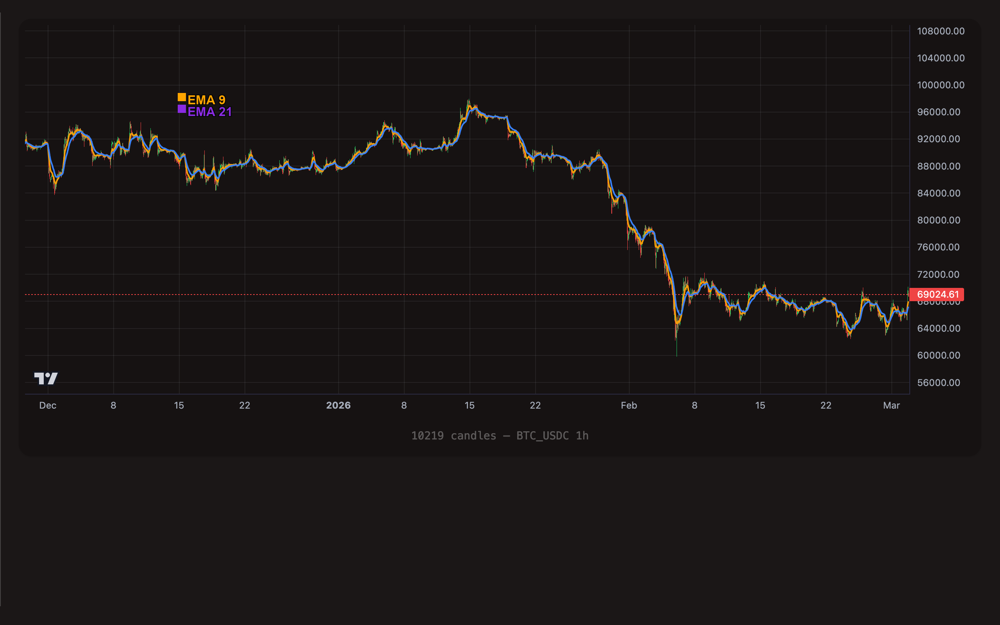
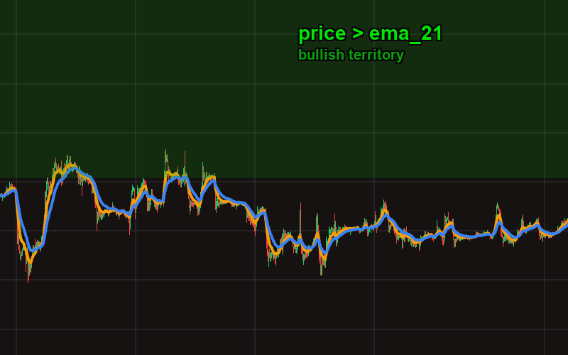
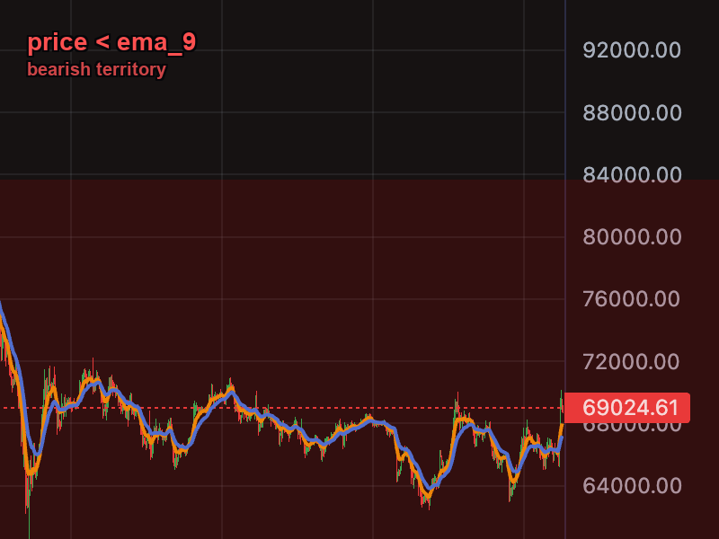
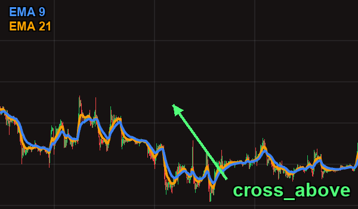
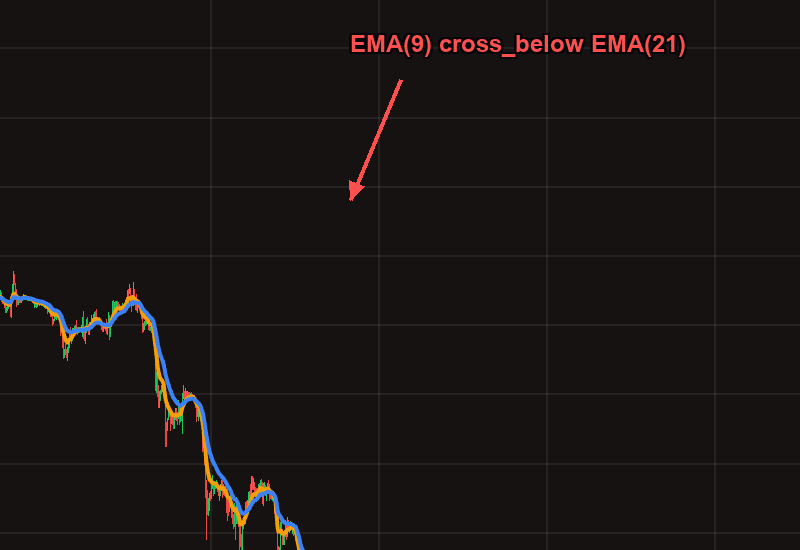
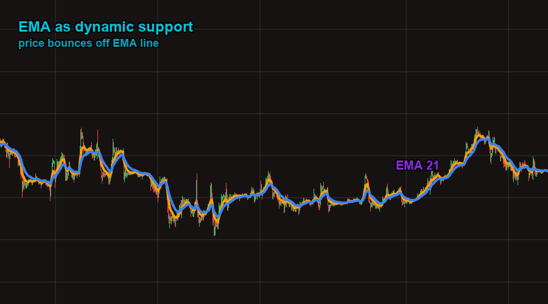
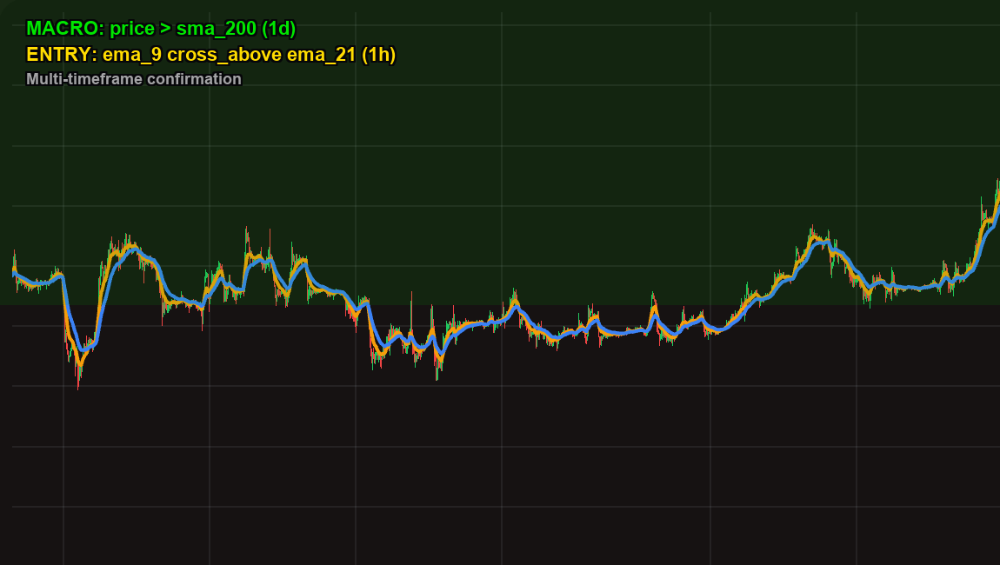

EMA -- Exponential Moving Average
Contents
The Exponential Moving Average is a weighted moving average that gives more weight to recent prices. Unlike SMA, which treats every candle in the window equally, EMA applies a multiplier that makes the most recent price data count more. This means EMA reacts faster to price changes, hugging the price line more closely and reducing lag.
The weighting is exponential: the most recent candle has the highest weight, the second most recent has slightly less, and so on -- with the influence of older candles decaying smoothly rather than dropping off a cliff. The formula uses a smoothing factor of 2 / (period + 1), so a 9-period EMA gives roughly 20% weight to the latest candle, while a 50-period EMA gives roughly 4%.

BTC/USDC 1-hour chart with EMA(9) (orange) and EMA(21) (purple). The fast EMA(9) hugs price more closely and generates more frequent crossover signals than SMA pairs.
Format
ema_{period}
The period must be an integer between 1 and 200.
Examples:
| TOML value | Meaning |
|---|---|
ema_9 | 9-period Exponential Moving Average |
ema_12 | 12-period EMA (classic MACD fast line) |
ema_21 | 21-period EMA (popular scalping pair) |
ema_26 | 26-period EMA (classic MACD slow line) |
ema_50 | 50-period EMA (medium-term trend) |
SMA vs EMA -- When to Use Each
Both SMA and EMA smooth price data to identify trends, but they behave differently in practice.
| Characteristic | SMA | EMA |
|---|---|---|
| Weighting | Equal weight to all candles | More weight to recent candles |
| Lag | Higher -- slow to react | Lower -- reacts faster to new data |
| Smoothness | Smoother, fewer whipsaws | More responsive, can be choppier |
| False signals | Fewer, but entries may be late | More frequent, but catches moves earlier |
| Best for | Macro trend filters (daily/weekly) | Entry timing, scalping, short timeframes |
| Classic pairs | SMA(50)/SMA(200) -- Golden/Death Cross | EMA(9)/EMA(21), EMA(12)/EMA(26) |
Rule of thumb: Use SMA when you want a stable, macro view of the trend (is the market bullish or bearish over weeks/months?). Use EMA when you want to time entries and exits more precisely, especially on shorter timeframes where speed matters.
Many strategies combine both: an SMA(200) as a macro trend gate with EMA crossovers for entry timing within that trend.
Understanding Operators with EMA
The operators work identically to SMA, but because EMA reacts faster, crossover signals happen earlier and more frequently than with equivalent SMA periods.
> (Greater Than)
"Price is ABOVE the EMA line on the chart."
A state-based check that remains true on every candle where the condition holds. Since EMA tracks price more closely than SMA, the line stays nearer to the candle bodies and acts as tighter dynamic support.

Price candles closing above the EMA(21) line. The green zone represents "bullish territory" — every candle here makes price > ema_21 true.
# True on every candle where price closes above EMA(21)
[[actions.triggers]]
indicator = "price"
operator = ">"
target = "ema_21"
< (Less Than)
"Price is BELOW the EMA line on the chart."
The bearish mirror. Because EMA is more responsive, price falling below a short-period EMA is a faster warning signal than falling below the same-period SMA.

Price candles closing below the EMA(9) line. The red zone represents "bearish territory" — an early warning that momentum is fading.
# Price has dropped below the fast EMA -- early warning
[[actions.triggers]]
indicator = "price"
operator = "<"
target = "ema_9"
timeframe = "1h"
= (Equal)
Rarely useful with EMA. Like SMA, EMA values are floating-point decimals, and exact equality almost never occurs. Use > or < instead.
cross_above
"The MOMENT the fast EMA line crosses from below to above the slow EMA (or target)."
Because EMA reacts faster, crossovers happen sooner than with SMA. An EMA(9)/EMA(21) crossover catches trend shifts earlier than an SMA(50)/SMA(200) crossover -- but also produces more false signals in choppy, sideways markets.

EMA(9) crosses above EMA(21) — a bullish momentum shift. Notice how EMA crossovers happen earlier and more frequently than SMA crossovers.
# Fast EMA crosses above slow EMA -- bullish momentum shift
[[actions.triggers]]
indicator = "ema_9"
operator = "cross_above"
target = "ema_21"
timeframe = "1h"
cross_below
"The MOMENT the fast EMA line crosses from above to below the target."
The bearish crossover. With short-period EMAs this can fire multiple times in a ranging market, so consider adding a trend filter or max_count to prevent repeated signals.

EMA(9) crosses below EMA(21) — a bearish momentum shift. The fast EMA dropping below the slow EMA signals that short-term momentum has turned negative.
# Fast EMA crosses below slow EMA -- bearish momentum shift
[[actions.triggers]]
indicator = "ema_9"
operator = "cross_below"
target = "ema_21"
timeframe = "1h"
Short-period EMA crossovers (like 9/21) are fast but noisy. In a sideways market, the two EMA lines can weave back and forth, generating multiple false crossover signals. Always consider pairing EMA crossovers with a trend filter (such as price > sma_200 or ttm_trend = 1) to avoid whipsaws.
TOML Examples
EMA Crossover Scalping
Enter when the 9-period EMA crosses above the 21-period EMA on the 5-minute chart. This is a classic short-term momentum entry for scalping strategies.
[[actions]]
type = "open_long"
amount = "50 USDC"
[[actions.triggers]]
indicator = "ema_9"
operator = "cross_above"
target = "ema_21"
timeframe = "5m"
EMA Crossover Exit
Close the position when the fast EMA crosses back below the slow EMA, signaling momentum has reversed.
[[actions]]
type = "sell"
amount = "100%"
[[actions.triggers]]
indicator = "ema_9"
operator = "cross_below"
target = "ema_21"
timeframe = "5m"
EMA as Dynamic Support
Use the 21-period EMA as a dynamic support level. If price drops below it on the 1-hour chart, reduce your position as a precaution.

The EMA(21) acts as a dynamic support level. Price repeatedly bounces off this line during an uptrend. When it finally breaks below, it can signal a trend weakening.
[[actions]]
type = "sell"
amount = "25%"
[[actions.triggers]]
indicator = "price"
operator = "<"
target = "ema_21"
timeframe = "1h"
max_count = 1
Trend-Filtered EMA Entry
Combine a macro SMA trend filter with a fast EMA crossover for entry timing. This only buys EMA crossovers when the overall market is in an uptrend.

Multi-timeframe confirmation: the daily SMA(200) confirms the macro uptrend (green zone), while the hourly EMA(9)/EMA(21) crossover provides the precise entry timing. This pattern avoids buying EMA crossovers in bear markets.
[[actions]]
type = "open_long"
amount = "100 USDC"
# Macro filter: only trade in confirmed uptrend
[[actions.triggers]]
indicator = "price"
operator = ">"
target = "sma_200"
timeframe = "1d"
# Entry signal: fast EMA crossover on lower timeframe
[[actions.triggers]]
indicator = "ema_9"
operator = "cross_above"
target = "ema_21"
timeframe = "1h"
EMA + RSI Confluence Entry
Wait for the EMA crossover AND RSI to confirm oversold conditions before entering. Multiple confirmations reduce false signals.
[[actions]]
type = "open_long"
amount = "100 USDC"
# Momentum shift: EMA crossover
[[actions.triggers]]
indicator = "ema_12"
operator = "cross_above"
target = "ema_26"
timeframe = "1h"
# Confirmation: RSI was recently in oversold territory
[[actions.triggers]]
indicator = "rsi_14"
operator = "<"
target = "40"
timeframe = "1h"
Classic MACD-Style Crossover
The MACD indicator is built from EMA(12) and EMA(26). You can replicate MACD-like signals directly with EMA crossovers, giving you visual confirmation on the price chart itself rather than a separate oscillator panel.
[[actions]]
type = "open_long"
amount = "150 USDC"
# This is equivalent to watching the MACD line cross above zero
[[actions.triggers]]
indicator = "ema_12"
operator = "cross_above"
target = "ema_26"
timeframe = "4h"
Tips
The 9/21 EMA combination is one of the most widely used short-term crossover pairs. It generates signals fast enough for scalping on 5m and 15m charts while filtering out some of the candle-to-candle noise. For day trading on 1h charts, consider 12/26 instead for slightly smoother signals.
A powerful pattern is to use SMA(200) on the daily chart as a bull/bear market filter, then use EMA crossovers on lower timeframes (1h or 4h) for actual entry timing. This gives you reliable trend identification with responsive entry signals.
In choppy markets, EMA crossovers can fire repeatedly as the lines weave back and forth. Add max_count = 1 to a trigger if you only want it to fire once per position. This prevents your strategy from opening and closing positions on every minor crossover.
Short EMAs (9, 12) work best on short timeframes (5m, 15m, 1h). Medium EMAs (21, 50) suit 1h and 4h charts. Using a very short EMA on a daily chart produces too few data points per crossover, while a long EMA on a 1m chart barely moves. Match the period length to the timeframe for meaningful signals.
An EMA(50) and SMA(50) over the same data will have different values. The EMA will be closer to the current price because of its recency bias. In a strong uptrend, EMA(50) will be above SMA(50); in a strong downtrend, EMA(50) will be below SMA(50). Neither is "better" -- they serve different purposes.